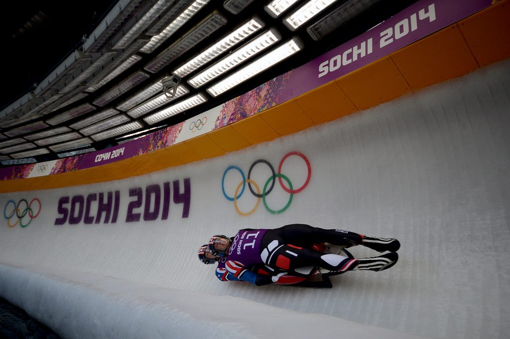
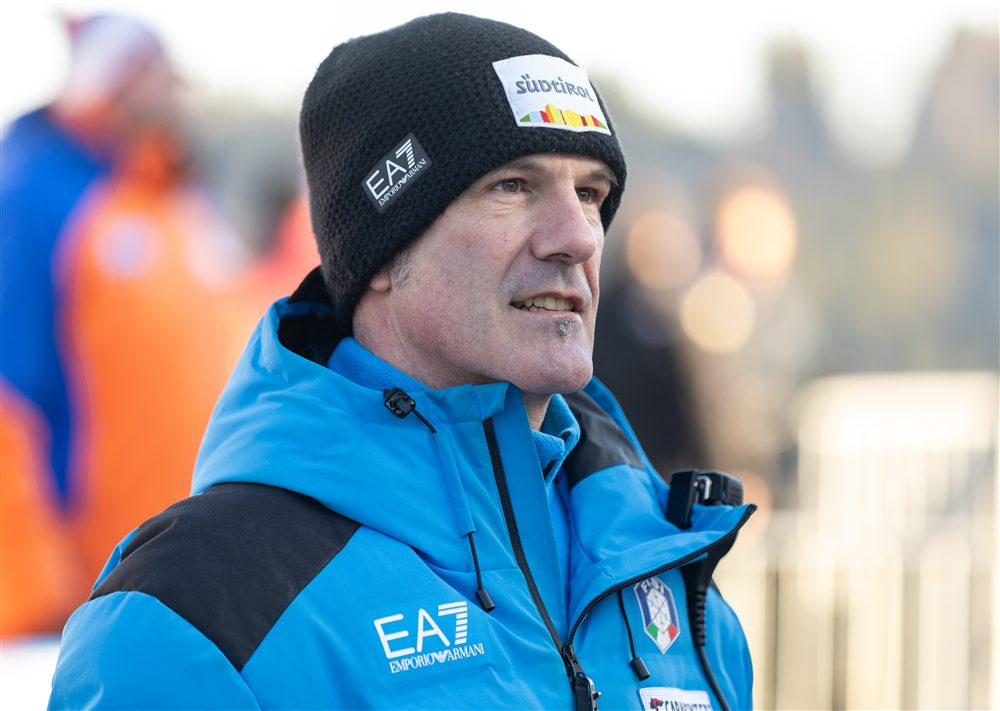
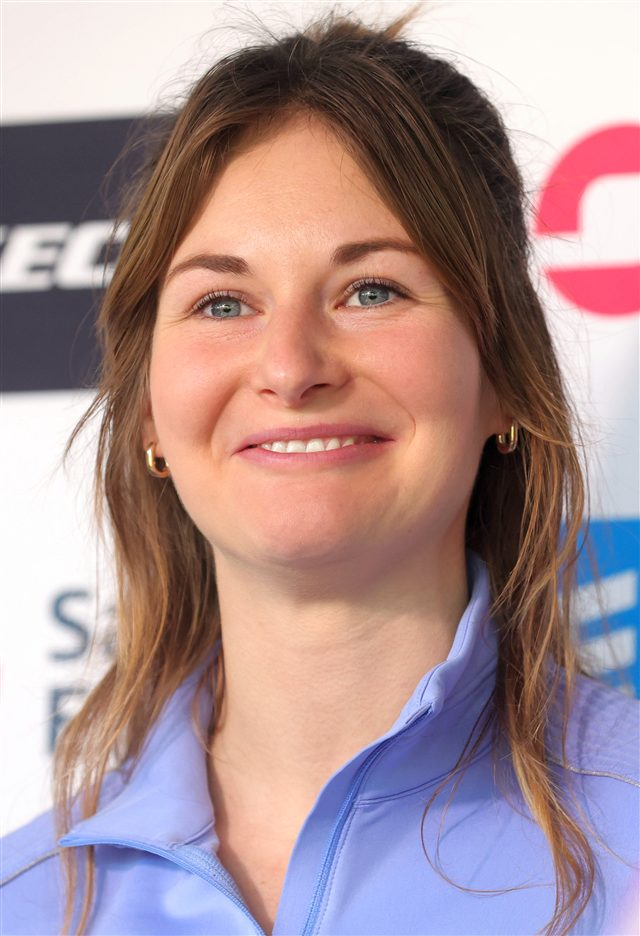
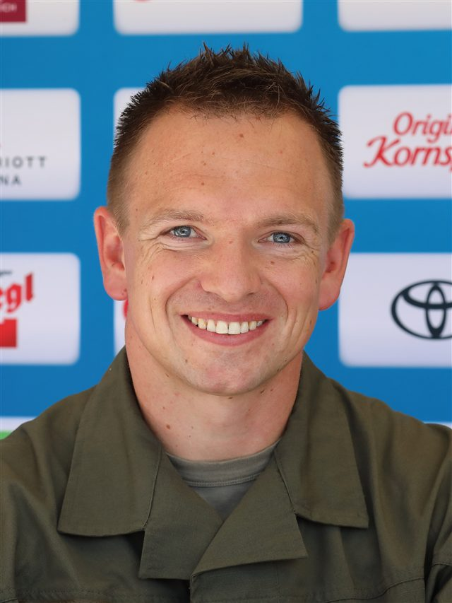
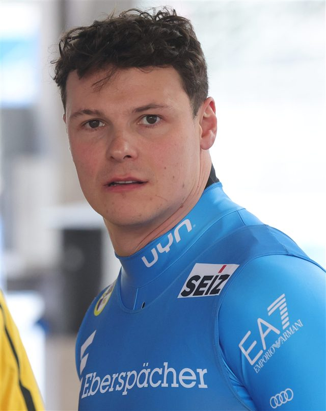
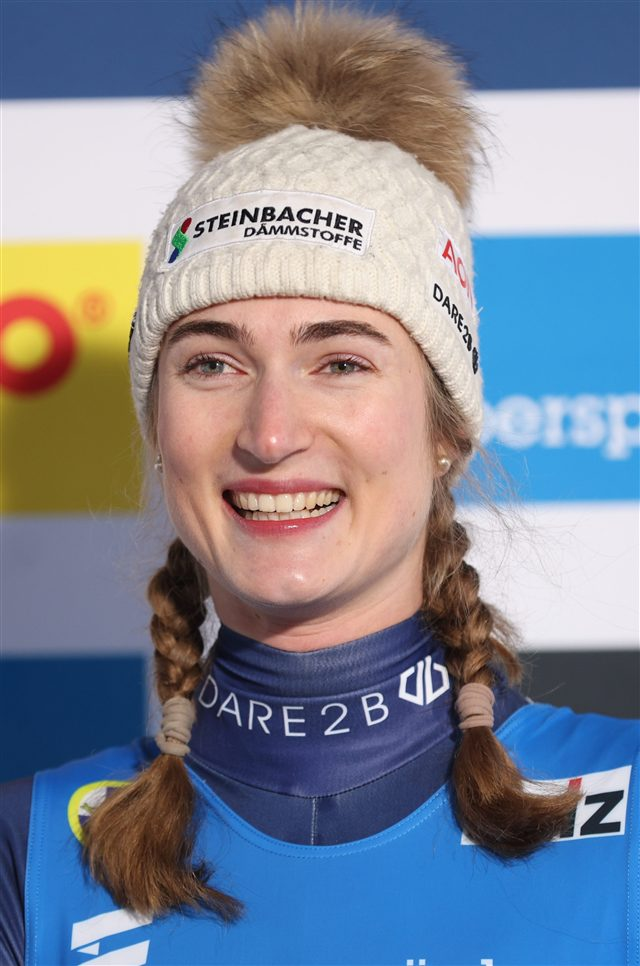

La position
Sur le dos, pieds devant, tête en arrière : l'aérodynamisme prime sur tout le reste.

140 km/h
Vitesse de pointe
0
Frein sur la luge
5
Épreuves au programme
En luge, l'athlète descend la piste de glace allongé sur le dos, pieds en avant, sur un engin sans aucun frein ni gouvernail. La vitesse peut dépasser 140 km/h, le visage à quelques centimètres de la glace.
Tout commence par un départ tracté : assis, le lugeur s'élance en tirant sur deux poignées puis se propulse avec des griffes. Le pilotage est invisible : il se fait par de subtiles pressions des mollets sur les patins et des épaules sur la luge. Au millième de seconde près.
L'Italien Armin Zöggeler, sextuple médaillé olympique, reste la légende absolue de la discipline.

Sur le dos, pieds devant, tête en arrière : l'aérodynamisme prime sur tout le reste.
Assis, le lugeur se tracte sur des poignées puis griffe la glace : les centièmes du départ sont décisifs.
Aucun gouvernail : on dirige par la pression des mollets et des épaules, invisible à l'œil nu.
Le même toboggan de glace que le bobsleigh et le skeleton, mais départ plus haut pour la luge.
Deux athlètes superposés sur une même luge : synchronisation parfaite obligatoire.
Le simple se court en quatre manches ; le titre se joue souvent au millième de seconde.
Lieu
Sliding Centre Eugenio Monti, Cortina d'Ampezzo
Capacité
≈ 5 000 places le long de la piste
Accès
Navettes JO depuis Cortina centre. Piste partagée avec bob et skeleton.
Billet
À partir de 40 € · 110 € (relais par équipes)
Température
Épreuves en soirée — prévoir -6 °C en bord de piste
 Allemagne
Allemagne
Allemagne
 Autriche
Autriche
 Italie
Italie
Autriche